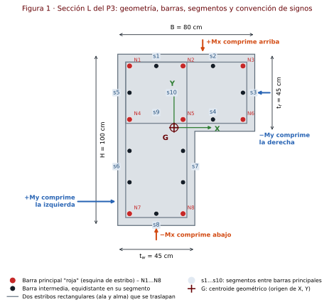
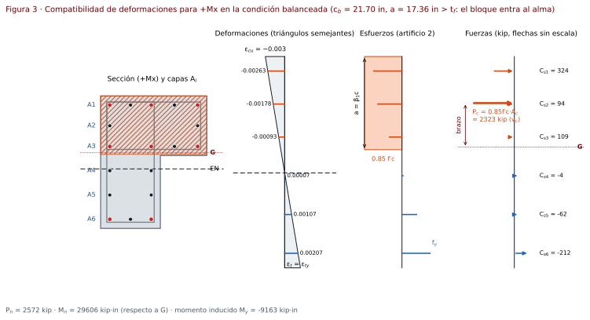
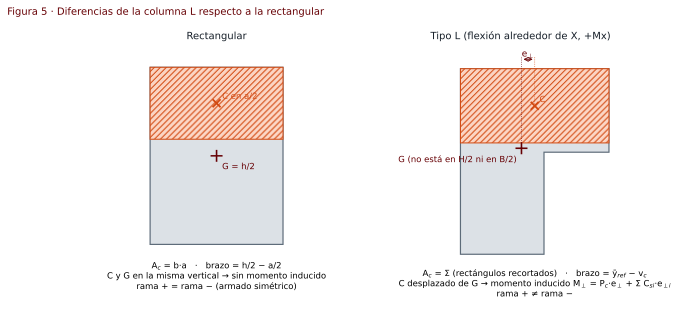
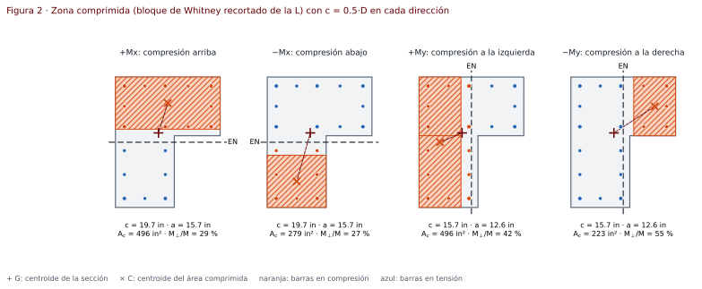
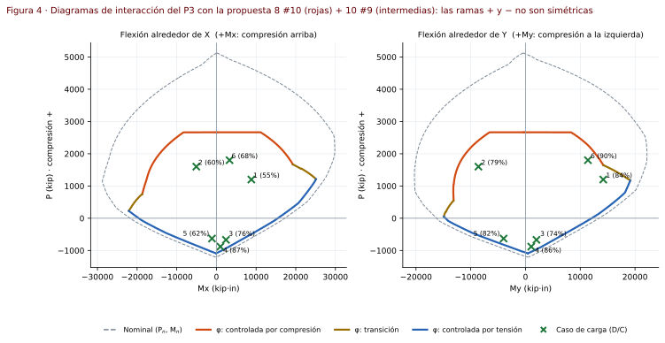

Procedimiento · Diagrama de interacción para columnas tipo L
Hoja de cálculo interactiva (un solo archivo HTML) para construir el diagrama de interacción P–M de columnas de concreto reforzado con sección en L, revisar combinaciones de carga y diseñar el refuerzo transversal por cortante, según ACI 318-19.
Es la versión 5 de la hoja de columnas del curso. La versión 4 solo resolvía secciones rectangulares; esta generaliza el mismo procedimiento de clase (compatibilidad de deformaciones, artificios 1 y 2, puntos A–F) a secciones formadas por rectángulos, empezando por la L.
ACI 318-19 · kip · in · ksi · compatibilidad de deformaciones · flexión uniaxial ±X, ±Y · caso de prueba: P3-ECR
Hoja en línea: abrir en GitHub Pages · archivo index.html en la raíz del repositorio. Abre con el ejemplo del P3 cargado; los botones de la barra superior cargan el P3 o el ejemplo de clase 80×80. La solución completa del P3 paso a paso está en el manual. Versión web en español: procedimiento-columna-L.html.
Contenido
- Qué hace la hoja
- Estructura del repositorio
- Datos de entrada
- Supuestos
- Tipo de análisis
- Procedimiento paso a paso
- Secciones de ACI 318-19 utilizadas
- Diferencias con la columna rectangular
- Caso de prueba: P3-ECR
- Validación
- Limitaciones y trabajo futuro
- Referencias
1. Qué hace la hoja
- Define la sección como unión de rectángulos (la L son dos: ala y alma) y calcula
y el centroide. - Coloca las barras con un generador tipo P3: 8 barras principales en las esquinas de los estribos y barras intermedias equidistantes en cada segmento entre ellas. Opcionalmente, las barras se editan como tabla de coordenadas.
- Calcula el diagrama nominal
y de diseño en las cuatro direcciones: , , , . - Desarrolla los puntos notables A–F con todas las sustituciones (tablas por capa, como en la hoja de clase).
- Revisa cada combinación
: relación demanda/capacidad en el diagrama X y en el Y por separado, y cortante. - Diseña el refuerzo transversal:
, , separación, separación máxima, soporte lateral y eslabones requeridos por segmento. - Muestra el momento perpendicular inducido
que aparece por la asimetría de la L.
Vistas de la hoja
| Vista | Qué muestra |
|---|---|
| Perfil de cálculo | La sección girada con la fibra comprimida arriba (en cualquiera de las 4 direcciones) y, alineados con ella, los diagramas de deformaciones, esfuerzos (bloque de |
| Planta | La sección en su orientación real con cotas |
| Diagramas X y Y | Curvas nominal y de diseño por zona, región segura sombreada, puntos A–F (′ = rama negativa) y cada combinación con su rayo D/C hasta el punto de capacidad. |
Las unidades de cotas, esfuerzos, fuerzas y momentos se eligen dentro de cada vista. En los diagramas:
- Cursor de lectura: al pasar el cursor, la hoja lee
en las ramas + y − para la del cursor. - Zoom: botones Todo, Combinaciones y Zona de tensión; con el mouse, arrastrar sobre la gráfica acerca ese rectángulo y el doble clic vuelve a Todo.
- Resaltado: tocar una combinación en la gráfica o en cualquier tabla la resalta en ambos diagramas y muestra
, en el rayo y su D/C.
La hoja ya no lleva párrafos de instrucciones: todo lo que explica el procedimiento está en este archivo.
2. Estructura del repositorio
├── index.html Hoja interactiva (HTML + CSS + JS en un solo archivo, sin dependencias)
├── README.md Portada del repositorio
├── docs/
│ ├── procedimiento-columna-L.md Este documento
│ ├── manual-P3-ECR-columna-L.md Solución del P3-ECR paso a paso
│ ├── *.html Versiones web en español de estos dos documentos (GitHub Pages)
│ └── img/
│ ├── fig1-seccion-L.svg Geometría, barras, segmentos y signos
│ ├── fig2-bloque-compresion.svg Zona comprimida en las 4 direcciones
│ ├── fig3-deformaciones.svg Compatibilidad de deformaciones (+Mx, punto B)
│ ├── fig4-diagramas-P3.svg Diagramas X y Y del caso de prueba
│ ├── fig5-rectangular-vs-L.svg Diferencias con la sección rectangular
│ └── P3-01 … P3-15 Figuras del manual (P3-08-1 … P3-08-7: área comprimida)
└── obsidian/
└── Manual P3-ECR - Columna L.md Manual en formato Obsidian
3. Datos de entrada
| Grupo | Dato | Símbolo | P3-ECR |
|---|---|---|---|
| Materiales | Resistencia del concreto | 5,000 psi | |
| Fluencia del acero (longitudinal y transversal) | 60 ksi (Grado 60) | ||
| Módulo del acero | 29,000 ksi | ||
| Deformación última del concreto | 0.003 | ||
| Geometría L | Ancho total (dirección X) | 0.80 m | |
| Alto total (dirección Y) | 1.00 m | ||
| Espesor del ala (horizontal) | 0.45 m | ||
| Espesor del alma (vertical) | 0.45 m | ||
| Esquina exterior | — | superior izquierda | |
| Recubrimiento libre al estribo | 0.04 m | ||
| Refuerzo | Estribo | #4 (propuesto) | |
| Barras principales ("rojas") | #10 (propuesto) | ||
| Barras intermedias por segmento | 1,1,1,1,1,2,2,1,0,0 | ||
| Varilla de las intermedias | — | #9 (propuesto) | |
| Columna | Altura total / altura libre | 6.00 m / 5.25 m | |
| Cargas | Combinaciones | 6 casos |
Las unidades de cada dato se eligen junto a la celda; internamente todo se calcula en kip, in y ksi.
4. Supuestos
- Secciones planas permanecen planas: la deformación varía linealmente con la distancia al eje neutro (ACI 22.2.1.2).
- Concreto: deformación máxima
en la fibra extrema comprimida (ACI 22.2.2.1); resistencia a tensión despreciada (ACI 22.2.2.2); bloque rectangular equivalente de con profundidad (ACI 22.2.2.4.1). - Acero: elastoplástico perfecto,
en tensión y compresión (ACI 20.2.2.1). Cada barra concentra su área en su centro. - Adherencia perfecta: la barra tiene la misma deformación que el concreto que la rodea.
- Concreto desplazado: si una barra queda dentro del bloque (
) se resta de su esfuerzo, como en la hoja de clase. - Flexión uniaxial:
y no actúan simultáneamente (lo pide el P3). Cada diagrama se construye con el eje neutro paralelo al eje de flexión. - Momento perpendicular inducido: como la L no es simétrica, ese eje neutro paralelo genera un momento en la otra dirección (
). La hoja lo calcula y lo reporta, pero no lo incluye en la revisión (método de clase). - Referencia de momentos: centroide geométrico
de la sección (generaliza el de la columna rectangular y coincide con los ejes del modelo de análisis). Opción: centroide plástico. - Columna corta: sin efectos de esbeltez ni momentos de segundo orden.
- Refuerzo transversal de estribos (no zuncho):
en compresión y . - Cortante: detalle ordinario. Cada dirección de cortante la resiste la pata de la L paralela a la fuerza (
= espesor de esa pata); no se suma el aporte de la otra pata.
Convención de signos
| Magnitud | Positivo | Negativo |
|---|---|---|
| Carga axial |
compresión | tensión |
| Deformación |
tensión | compresión |
| Esfuerzo y fuerza |
compresión | tensión |
| comprime la fibra superior (ala de 0.80 m) | comprime la fibra inferior (pie del alma) | |
| comprime la fibra izquierda (alma de 1.00 m) | comprime la fibra derecha (punta del ala) | |
| cortante asociado a |
||
| cortante asociado a |

5. Tipo de análisis
Análisis seccional de resistencia última por compatibilidad de deformaciones (ACI 22.2), con barrido del eje neutro. No es un análisis elástico ni por fibras: el bloque de Whitney se aplica de forma exacta sobre la forma real de la sección.
- Concreto: la zona comprimida es el pedazo de la sección que queda a menos de
de la fibra extrema. Como la sección es una unión de rectángulos y el eje neutro es paralelo a un eje, ese pedazo también es una unión de rectángulos; su área y su centroide se calculan en forma cerrada (sin discretizar). - Acero: se evalúa barra por barra. Las barras con la misma profundidad
se agrupan en una capa solo para presentar las tablas, igual que en clase. - Curva: se recorre
desde (compresión pura) hasta (tensión pura), con más densidad entre y , y se agregan exactamente los puntos B, C, D y E. - Revisión de cargas: método radial. Cada combinación se une con el origen y se busca dónde esa recta corta la curva de diseño.
flowchart TD
A[Materiales: f'c, fy, Es, εcu] --> B[β1, εty, εt límite]
G[Geometría: rectángulos de la L] --> H[Ag, centroide G]
R[Armado: N1–N8 + intermedias por segmento] --> S[Coordenadas de cada barra, Ast, ρ]
H --> D{4 direcciones: +Mx, −Mx, +My, −My}
S --> D
B --> D
D --> E[Profundidades d_i, capas A_i, d_t, D]
E --> F[Barrido de c: ∞ → 0]
F --> P[Pn, Mn, M⊥ para cada c]
P --> Q[Puntos A, E, B, C, D, F]
P --> PHI[φ según εt → φPn, φMn, tope φPn,máx]
PHI --> CUR[Diagramas X y Y: ramas + y −]
CUR --> CHK[Combinaciones: D/C en X y en Y]
S --> V[Cortante por combinación: Vc, Av/s, s]
V --> T[Separación final, soporte lateral, eslabones]
6. Procedimiento paso a paso
6.1 Materiales
Para el P3:
6.2 Geometría
La L se descompone en dos rectángulos que no se traslapan (esquina exterior arriba a la izquierda, origen en la esquina inferior izquierda):
| Rectángulo | ancho | alto | ||
|---|---|---|---|---|
| R1 · ala | 0 | |||
| R2 · alma bajo el ala | 0 | 0 |
P3:
El centroide plástico (opcional) es el punto donde actúa
En el P3 queda a 0.09 in del centroide geométrico, así que la elección no cambia los resultados.
6.3 Armado longitudinal
Con
| Nodo | Coordenada | Ubicación |
|---|---|---|
| N1, N2, N3 | cara superior | |
| N4, N5, N6 | nivel inferior del ala (N5 = esquina entrante) | |
| N7, N8 | pie del alma |
Cada segmento entre dos nodos recibe
| Segmento | Entre | Cara | P3 |
|---|---|---|---|
| s1 | N1–N2 | superior, sobre el alma | 1 |
| s2 | N2–N3 | superior, sobre el ala | 1 |
| s3 | N3–N6 | punta del ala | 1 |
| s4 | N5–N6 | cara inferior del ala | 1 |
| s5 | N1–N4 | izquierda, a la altura del ala | 1 |
| s6 | N4–N7 | izquierda, alma | 2 |
| s7 | N5–N8 | derecha del alma | 2 |
| s8 | N7–N8 | pie del alma | 1 |
| s9, s10 | N4–N5, N2–N5 | líneas interiores (traslape de estribos) | 0 |
Revisiones del armado:
- Cuantía:
, entre 1 % y 8 % (ACI 10.6.1.1); el P3 pide además 1 %–4 %. - Número mínimo de barras: 4 (ACI 10.7.3.1).
- Separación libre en cada segmento:
(ACI 25.2.3).
6.4 Direcciones de análisis
Cada dirección se define por la fibra extrema comprimida. La profundidad de un punto se mide desde esa fibra.
| Dirección | Fibra comprimida | Profundidad de la barra |
Peralte total |
Referencia |
|---|---|---|---|---|
| superior, |
||||
| inferior, |
||||
| izquierda, |
||||
| derecha, |
6.5 Estado de la sección para un eje neutro
Artificio 1 (triángulos semejantes) y artificio 2 (esfuerzo con signo de clase):
Bloque de compresión:
Para la L en
En
Fuerzas y resultantes (compresión positiva):
En la rectangular
flowchart LR
c[c elegido] --> a["a = mín(β1·c, D)"]
a --> Ac["A_c y v_c por rectángulos"]
c --> e["ε_si = εcu·(d_i − c)/c"]
e --> f["f_si = −signo(ε)·mín(Es·|ε|, fy)"]
f --> C{"¿a ≥ d_i?"}
C -- sí --> C1["C_si = A_si·(f_si − 0.85f'c)"]
C -- no --> C2["C_si = A_si·f_si"]
Ac --> Pc["P_c = 0.85·f'c·A_c"]
Pc --> R["P_n, M_n, M⊥"]
C1 --> R
C2 --> R
e --> et["ε_t en d_t"] --> phi["φ"]

6.6 Puntos notables
| Punto | Condición | Eje neutro |
|---|---|---|
| A · compresión pura | todo comprimido, |
|
| E · eje neutro igual al peralte | sección completa comprimida | |
| B · balanceada | el concreto llega a |
|
| C · inicio de control por tensión | ||
| D · flexión pura | raíz de |
|
| F · tensión pura | todo el acero fluye a tensión |
En la L,
6.7 Factor φ y curva de diseño
| Zona | Condición | |
|---|---|---|
| Controlada por compresión | 0.65 | |
| Transición | ||
| Controlada por tensión | 0.90 |
6.8 Revisión de combinaciones
Para cada combinación se revisan dos puntos independientes:
medida sobre la recta que pasa por el origen y por
6.9 Cortante
Es el procedimiento de las hojas de clase Cortante en Columnas (Mathcad) y Diseño de Columnas (Excel, hoja IC), aplicado a cada combinación y en los dos ejes.
Eje fuerte y eje débil. La hoja calcula
| Cortante | Eje | Lo resiste | ||
|---|---|---|---|---|
| fuerte en el P3 | alma vertical | |||
| débil en el P3 | ala horizontal |
Cortante de diseño. Si se ingresan
Carga axial en
: por defecto como en la hoja de clase; opciones: real o las barras a más de de la fibra comprimida (comentario R22.5.5.1). si ; si no, . Además . - Separación de los estribos por soporte lateral:
. - Separación de diseño:
sobre todas las combinaciones. - Eslabones (ACI 25.7.2.3): en cada segmento, las barras principales están soportadas por esquinas de estribo. Si la separación libre entre barras es
in basta soportar barras alternas ( eslabones); si es mayor, cada barra intermedia necesita su eslabón ( eslabones). : si no aplica el cortante por capacidad de ACI 18.3.3 y es el del análisis. - En la sección rectangular la hoja también muestra la separación libre por cara con la fórmula de clase,
. - La hoja muestra todos los cálculos: una tabla por eje con
, , calculado y usado, , , , , , , y la revisión de cada combinación, y el desarrollo paso a paso de la combinación elegida.
Diferencia con la hoja de clase. La hoja aplica el tope
7. Secciones de ACI 318-19 utilizadas
| Sección | Uso en la hoja |
|---|---|
| 10.6.1.1 | Cuantía longitudinal entre 1 % y 8 % |
| 10.6.2.2 | Área mínima de refuerzo a cortante |
| 10.7.3.1 | Mínimo 4 barras longitudinales con estribos |
| 10.7.6.5.2 | Separación máxima del refuerzo a cortante |
| 18.3.3 | Cortante en columnas de pórticos ordinarios (aplicabilidad según |
| 19.2.2.1 | Módulo de elasticidad del concreto (informativo) |
| 20.2.2.1, 20.2.2.2 | Relación esfuerzo-deformación y |
| 20.5.1.3.1 | Recubrimiento de concreto |
| 21.2.1, Tabla 21.2.2 | Factores |
| 22.2.1.2, 22.2.2.1, 22.2.2.2 | Compatibilidad, |
| 22.2.2.4.1, Tabla 22.2.2.4.3 | Bloque equivalente |
| 22.4.2.1, 22.4.2.2 | |
| 22.4.3.1 | Resistencia a tensión pura |
| 22.5.1.2 | Límite |
| Tabla 22.5.5.1, 22.5.5.1.1–.2 | |
| 25.2.3 | Separación libre mínima entre barras de columnas |
| 25.7.2.1 | Separación de estribos ( |
| 25.7.2.3 | Soporte lateral de barras (esquinas, alternas, 6 in) |
8. Diferencias con la columna rectangular

| Aspecto | Rectangular (v4) | Tipo L (v5) |
|---|---|---|
| Referencia de momentos | centroide |
|
| Área comprimida | por tramos: depende de si |
|
| Brazo del concreto | ||
| Ramas + y − | iguales (armado simétrico) | distintas: se calculan 4 curvas |
| Momento en la otra dirección | cero | |
| Capas | barras por cara iguales | capas con distinto número de barras; |
| Barras | 4 esquinas + intermedias por cara | 8 principales + intermedias en 10 segmentos |
| Estribos | uno perimetral + ramas | dos rectangulares traslapados; esquina entrante en N5 |
| Cortante | ||
| Menor dimensión (25.7.2.1) |
La zona comprimida cambia de forma según la dirección y la profundidad del bloque. Por eso en la L el diagrama no es simétrico y cada signo de momento se calcula por separado:

Momento perpendicular inducido. Con el eje neutro paralelo a X, el centroide del área comprimida no queda en la misma vertical que
9. Caso de prueba: P3-ECR
Inciso 1 · propuesta de armado (respetando las 18 barras del enunciado):
| Cantidad | Varilla | Área | |
|---|---|---|---|
| Barras principales ("rojas") N1–N8 | 8 | #10 | 10.16 in² |
| Barras intermedias | 10 | #9 | 10.00 in² |
| Total | 18 | 20.16 in² |
Inciso 2 · diagramas (la hoja y el motor de referencia en Python coinciden a 4 decimales):
| Dirección | Capas | |||||||
|---|---|---|---|---|---|---|---|---|
| 39.370 | 36.660 | 6 | 21.697 | 2,571.7 | 29,605.5 | −9,162.7 | 17,198.2 | |
| 39.370 | 36.660 | 6 | 21.697 | 1,147.5 | −28,788.2 | 7,882.7 | −21,768.4 | |
| 31.496 | 28.786 | 5 | 17.037 | 2,533.4 | 21,847.6 | −9,764.7 | 13,418.0 | |
| 31.496 | 28.786 | 5 | 17.037 | 841.5 | −20,227.1 | 11,329.8 | −16,248.3 |
Inciso 3 · revisión (momentos no simultáneos):
| Caso | D/C en X | D/C en Y | Resultado | |||
|---|---|---|---|---|---|---|
| 1 | 1,200 | 8,800 | 54.8 % | 14,200 | 84.5 % | Cumple |
| 2 | 1,600 | −5,075 | 60.3 % | −8,600 | 79.2 % | Cumple |
| 3 | −670 | 2,400 | 75.9 % | 2,000 | 74.0 % | Cumple |
| 4 | −880 | 1,000 | 86.8 % | 1,050 | 85.7 % | Cumple |
| 5 | −630 | −1,125 | 62.4 % | −4,000 | 82.0 % | Cumple |
| 6 | 1,800 | 3,300 | 67.5 % | 11,400 | 89.6 % | Cumple |

Con barras más pequeñas no cumple: 8 #9 + 10 #8 (1.69 %) da D/C = 110 % en el caso 4, que es tensión casi pura y depende sobre todo de
Inciso 4 · cortante (
| Caso | |||||||
|---|---|---|---|---|---|---|---|
| 1 | 1,200 | 250 | 172.2 | 21.6 | 345 | 135.2 | 6.3 |
| 2 | 1,600 | −175 | 172.2 | 64.9 | −240 | 135.2 | 12.6 |
| 3 | −670 | 120 | 32.5 | 19.2 | 115 | 31.5 | 15.8 |
| 4 | −880 | 80 | 14.4 | 25.6 | 78 | 17.3 | 21.7 |
| 5 | −630 | −85 | 36.0 | 34.2 | −160 | 34.2 | 10.5 |
| 6 | 1,800 | 150 | 172.2 | 64.9 | 325 | 135.2 | 6.9 |
- En compresión
llega al tope ; en los casos de tensión (3, 4 y 5) el término es negativo y baja a 14–36 kip. - Controla el caso 1 en Y (ala):
cm con 2 ramas. Con 3 ramas en el ala sube a 9.0 cm y con 4 ramas a 12.5 cm; con estribo #5 y 2 ramas, 9.5 cm. cm, no controla. - Eslabones (ACI 25.7.2.3): en s6 y s7 la separación libre es 15.29 cm > 6 in, así que sus 2 barras intermedias necesitan soporte. Como las barras de s6 y s7 están a la misma altura, bastan 2 eslabones #4 horizontales, cada uno amarra una barra de s6 y la de s7 que tiene enfrente. En los demás segmentos basta con las esquinas.
La elección final de ramas y eslabones queda a criterio del estudiante (lo permite el enunciado); la hoja recalcula la separación al cambiar
10. Validación
| Prueba | Qué se compara | Estado |
|---|---|---|
| Método exacto vs. fibras | Motor de rectángulos recortados contra una malla de fibras de 0.02 in, 16 estados de la L del P3 | Diferencias < 0.1 % en |
| Cortante vs. hoja de clase | Ejemplo 80×80 con |
Idénticos ( |
| Rectangular v4 vs. v5 | Ejemplo de clase 80×80 (4 #8 + 12 #7): puntos A–F en X y Y, D/C y cortante | Idénticos (p. ej. |
| Hoja vs. motor de referencia | P3 completo: centroide, capas, puntos A–F y |
Coinciden a 4 decimales; D/C dentro de 0.1 % (muestreo de la curva) |
| Formas y orientaciones | L en sus 4 orientaciones, sección personalizada con los mismos rectángulos, ancho de teléfono y modo oscuro | Mismos resultados; sin errores de consola |
11. Limitaciones y trabajo futuro
- Flexión biaxial (superficie de interacción, eje neutro girado) para eliminar
y revisar y simultáneos. - Secciones circulares (con zuncho) y formas que no son unión de rectángulos.
- Esbeltez (magnificación de momentos) y columnas con detalle especial (zona confinada, ACI 18.7).
- Presets de T y C (el motor ya las admite como rectángulos personalizados).
12. Referencias
- American Concrete Institute. (2019). Building Code Requirements for Structural Concrete (ACI 318-19) and Commentary. ACI.
- Clases de Diseño de Columnas 1, 2 y 3 (15, 22 y 23 de octubre de 2026) y hojas "Diseño de Columnas" (Mathcad y Excel) y "Cortante en Columnas" del curso Estructuras de Concreto Reforzado, Universidad Rafael Landívar.
- Tercer Examen Parcial (2026), Estructuras de Concreto Reforzado, Universidad Rafael Landívar: enunciado del caso de prueba P3-ECR.
Historial de versiones
| Versión | Cambios |
|---|---|
| v4 | Columna rectangular, puntos A–F, cortante con detalle ordinario |
| v5 | Sección como unión de rectángulos (L), 4 direcciones, |
| v5.1 | Perfil de cálculo (deformaciones, esfuerzos y fuerzas alineados con la sección), planta con cotas y unidades, rayos D/C, región segura, cursor de lectura, zoom y resaltado de combinaciones enlazado con las tablas |
| v5.2 | Cortante revisado contra la hoja de clase: ejes fuerte y débil por inercias, |